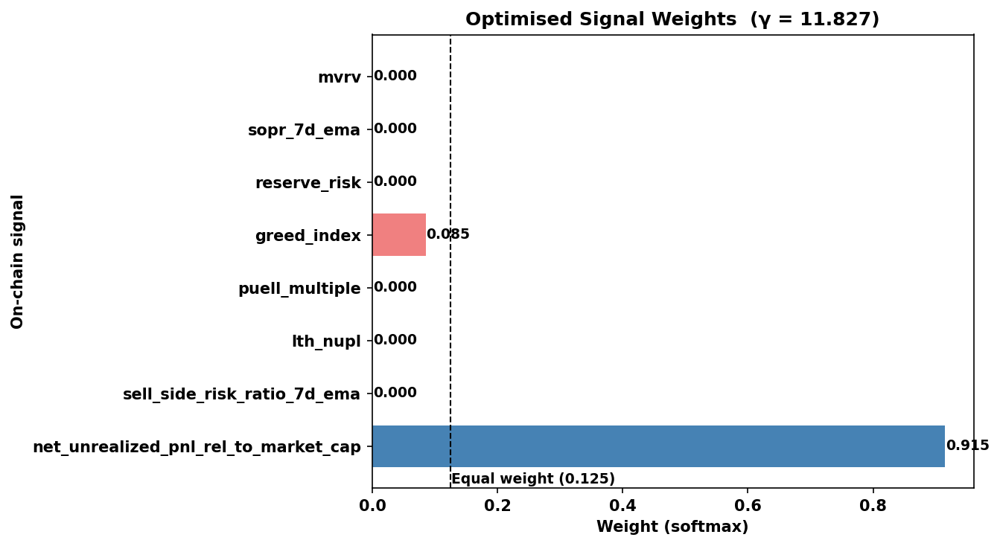
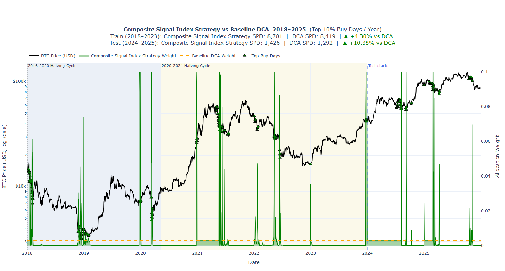

Composite Signal Index Strategy for Bitcoin Accumulation
Introduction
Dollar-Cost Averaging (DCA) is the default playbook for most Bitcoin accumulators: buy a fixed dollar amount at regular intervals, ignore short-term noise, and trust the long-term trend. It’s simple, disciplined, and genuinely hard to beat on a risk-adjusted basis.
But what if we could do better - not by timing the market, but by reading its temperature? The Composite Signal Index strategy does exactly that. It combines eight carefully chosen on-chain metrics into a single “cheapness score”, then concentrates your buying budget on the days when Bitcoin is most undervalued - all without even peeking into the future.
This post walks through the full architecture of the strategy: the signals it uses, the mathematics behind the score, how the budget gets allocated within each year, and how the parameters are optimized against historical data.
The Core Idea: A Cheapness Index for Bitcoin
The strategy is built on a simple premise: on-chain data contains persistent signals of market undervaluation. When long-term holders are underwater, when miners are stressed, when sentiment is at rock bottom - these are historically the best moments to accumulate more sats per dollar.
Rather than betting everything on a single signal, the Composite Signal Index strategy blends eight complementary dimensions of market state into one composite score. The score drives a budget allocation system that front-loads buying on cheap days and throttles back when the market looks expensive - all within a fixed annual budget, exactly like DCA.
The Eight On-Chain Signals
Each signal measures a distinct facet of market health. Together they paint a multidimensional picture of whether Bitcoin is cheap or expensive on any given day.
| Signal | What it measures | Cheap signal when… |
|---|---|---|
mvrv |
Market Value to Realized Value ratio | Low = market undervaluation |
sopr_7d_ema |
Spent Output Profit Ratio (7-day EMA) | sopr < 1 = investors selling at loss |
reserve_risk |
Holder conviction vs. price | Low = strong conviction relative to price, good buy zone |
greed_index |
Crowd sentiment | 0 = extreme fear, potential market bottoms |
puell_multiple |
Miner revenue relative to annual average | Low = miner stress/capitulation |
lth_nupl |
Long-Term Holder Net Unrealized P&L | Low = capitulation/undervaluation |
sell_side_risk_ratio_7d_ema |
Short-term selling pressure | Low = market participants not eager to sell |
net_unrealized_pnl_rel_to_market_cap |
Aggregate NUPL(Net Unrealized Profit/Loss) | Low = widespread unrealized losses |
What makes this set powerful is its diversity. MVRV and NUPL measure valuation. SOPR measures realized behavior. Reserve Risk captures conviction dynamics. The Greed Index captures crowd psychology. Puell Multiple tracks miner economics. No single signal dominates every cycle - but their combination covers the most meaningful dimensions of market stress.
Step 1: Causal Rolling Z-Score Standardization
Raw signal values aren’t directly comparable - MVRV lives in a different numeric range than the Greed Index. The first preprocessing step standardizes each signal using a causal rolling 365-day z-score:
\[z_t^{(i)} = \frac{x_{t-1}^{(i)}-\mu_{t-1,365}^{(i)}}{\sigma_{t-1,365}^{(i)}+\varepsilon}\]
where \(\mu_{t-1,365}\) and \(\sigma_{t-1,365}\) are the mean and standard deviation computed over the trailing 365-day window ending at day \(t-1\). A small constant \(\varepsilon = 10^{-8}\) prevents division by zero.
Why causal? Because the strategy must be executable in real time. Using only past data ensures there’s no look-ahead bias - the z-score on any given day only reflects what was knowable up to that day.
Why 365 days? A one-year window captures approximately one full seasonal cycle, giving stable statistics while remaining responsive to changing market regimes. With min_periods=2, the window starts computing as soon as two data points are available.
Sparse signals (like reserve_risk, which may have data gaps) are handled with forward-fill - the most recent known value is carried forward. Crucially, no backward fill is used; only past data fills gaps.
Step 2: Building the Composite Cheapness Score
With all signals on a comparable z-scale, the strategy computes a single cheapness score for each day.
Signal Weights via Softmax
The eight signals are combined using a softmax-weighted blend. Instead of tuning weights directly (which would require a constrained optimization over the simplex), the model learns an unconstrained logit vector \(\boldsymbol{\ell} \in \mathbb{R}^8\), and the actual weights are:
\[w_i = \frac{e^{\ell_i}}{\sum_j e^{\ell_j}}\]
This parameterization is unconstrained during optimization (Nelder-Mead(Baudin (2010)) works in unconstrained space), but always produces valid weights that sum to 1 and are strictly positive.
Cheapness Score
A positive z-score means a signal is elevated - market is “hot”. Negating the z-scores flips them into cheapness contributions. The composite cheapness for day \(t\) is:
\[\text{cheapness}_t = \sum_{i=1}^{8}w_i \cdot \left(-z_t^{i}\right)\]
When the composite of all signals points toward undervaluation, this score is high and positive. When the market is overheated across most dimensions, the score goes negative.
Buy Score with Sharpness Exponent
The raw cheapness score is transformed into a buy score via a non-negative exponentiation:
\[\text{buy\_score}_t = \max(0,\; \text{cheapness}_t)^{\gamma}\]
- Clamping at zero: When the market is expensive (\(\text{cheapness}_t \leq 0\)), the buy score is exactly zero. The strategy doesn’t try to avoid buying on those days - it simply falls back to minimum allocation.
- Sharpness exponent \(\gamma\): This controls how aggressively the strategy concentrates capital on the best days.
- \(\gamma > 1\): Amplifies the peaks. The strategy accumulates capital for deployment on only the cheapest periods.
- \(\gamma < 1\): Smooths contributions. Spreads buying more evenly across moderately cheap days.
- \(\gamma = 1\): Linear relationship between cheapness and allocation weight.
Both the logit vector \(\boldsymbol{\ell}\) and exponent \(\gamma\) are learned from data, giving the optimizer two degrees of freedom: which signals to trust and how sharply to act on the cheapness signal.
Step 3: Budget Allocation
The strategy operates under a strict budget constraint: the entire annual budget must be deployed within each 365-day window, with per-day bounds of [\(10^{−5}\), 0.1].
The allocator must decide, day by day, how much of the remaining budget to spend - without knowing how cheap future days will be.
The Algorithm
For each 365-day window:
remaining_budget ← 1.0
running_scores ← []
for t = 0 … 364:
score_t ← buy_score[t]
running_scores.append(score_t)
remaining_days_after ← 364 − t
if t == 364:
w_t ← remaining_budget # last day: spend everything left
else:
running_mean ← mean(running_scores)
estimated_remaining_sum ← score_t + running_mean × remaining_days_after
if estimated_remaining_sum > 0:
w_t_raw ← (score_t / estimated_remaining_sum) × remaining_budget
else:
w_t_raw ← remaining_budget / (remaining_days_after + 1) # uniform fallback
max_allowed ← min(MAX_WEIGHT, remaining_budget − remaining_days_after × MIN_WEIGHT)
w_t ← clamp(w_t_raw, MIN_WEIGHT, max(max_allowed, MIN_WEIGHT))
remaining_budget −= w_tThe Key Insight: Estimating the Remaining Score Sum
The denominator score_t + running_mean × remaining_days_after is a causal estimate of the total score left in the window. It asks: “If future days are, on average, as cheap as past days have been so far, what total score should I expect?”
This is the simplest unbiased estimator available at time \(t\) without look-ahead. On a very cheap day (high score), the fraction score_t / estimated_remaining_sum is large, so a bigger portion of the remaining budget is deployed. On an average day, allocation is proportional to budget.
Budget Safety Guards
Two guards prevent the algorithm from running out of budget or locking itself into a constraint-infeasible state:
- max_allowed: Ensures that after spending \(w_t\), there is still enough budget remaining to give every future day at least
MIN_WEIGHT. This prevents over-spending early. - [MIN_WEIGHT, MAX_WEIGHT] clamp: Every day gets at least a token allocation (no day is skipped), and no single day consumes more than 10% of the annual budget.
A bounded simplex projection step is applied to enforce the constraints exactly and renormalize the window’s weights to sum precisely to 1.0.
Step 4: Nelder-Mead Optimization
The logit vector \(\boldsymbol{\ell} \in \mathbb{R}^8\) and log-exponent \(log \gamma\) form a 9-dimensional parameter vector that is jointly optimized on the training period (2018 - 2023).
Parameter Space
| Parameter | Representation | Count |
|---|---|---|
| Signal logits \(\ell_1 \dots \ell_{8}\) | Unconstrained reals; signal weights \(= \text{softmax}(\boldsymbol{\ell})\) | 8 |
| Log-exponent \(\log \gamma\) | Unconstrained real; \(\gamma = e^{\log\gamma}\) clipped to \([e^{-3}, e^{3}]\) | 1 |
| Total | - | 9 |
The starting point \(\boldsymbol{\theta}_0 = \mathbf{0}\) corresponds to equal signal weights and \(\gamma\) = 1 - effectively the simplest possible composite index with no learned preferences.
Objective: Maximize Sats Per Dollar (SPD)
The optimizer maximizes mean sats-per-dollar (SPD) ratio relative to uniform DCA, averaged across all complete 365-day windows in the training period:
\[\max_{\boldsymbol{\theta}} \;\frac{1}{K}\sum_{k=1}^{K} \frac{\text{SPD}_{\text{strategy}}^{(k)}}{\text{SPD}_{\text{DCA}}^{(k)}}\]
where
\[\text{SPD}^{(k)} = \sum_{t \in \text{window } k} \frac{w_t}{P_t}\]
SPD is the natural objective for a Bitcoin accumulation strategy. Higher SPD means more BTC (or sats) acquired per dollar deployed. By expressing it as a ratio to DCA, the objective is dimensionless and comparable across different price environments.
Why Nelder-Mead?
Nelder-Mead(Baudin (2010)) is a derivative-free simplex method - suitable here because:
- The objective function (SPD ratio after budget allocation) is not analytically differentiable with respect to the parameters.
- The parameter space is small (9 dimensions), making gradient-free search computationally tractable.
- The algorithm is robust to mild non-convexity, which is expected in this type of financial optimization.
Optimization runs for up to 5,000 function evaluations with adaptive simplex scaling. Implemented as minimize(objective, \(\boldsymbol{\theta}\), method=“Nelder-Mead”)(SciPy Developers (2026)).
Guardrails: Entropy Regularization and a Tighter Sharpness Bound
Two design choices keep the optimizer from collapsing onto a degenerate, single-signal solution:
Entropy penalty on the logits. The objective subtracts a penalty proportional to how far the softmax weight distribution drifts from uniform:
\[\text{penalty}(\boldsymbol{\ell}) = \lambda \left(\log n - H(\mathbf{w})\right), \quad H(\mathbf{w}) = -\sum_i w_i \log w_i\]
with \(\lambda = 0.05\). This is zero when weights are perfectly uniform and grows as the distribution concentrates onto fewer signals, directly discouraging the optimizer from routing all its weight into one or two dominant signals purely because they happened to fit the training years best.
Tighter exponent bound. \(\log \gamma\) is clipped to [−1.6,1.6] (i.e., \(\gamma \in [0.2, 5.0]\)). This prevents the sharpness exponent from running away toward values that turn buy_score into a near-indicator function dominated by a handful of extreme-outlier days.
Backtest Design
Train / Test Split
| Period | Date Range | Role |
|---|---|---|
| Training | 2018-01-01 → 2023-12-31 | Parameter optimization (6 complete years) |
| Testing | 2024-01-01 → 2025-12-31 | Out-of-sample evaluation (2 years) |
Leap Year Handling
Each calendar year contributes exactly 365 rows to the evaluation window. For leap years (366 days), the first day (January 1) is dropped - the last 365 days of the year are used. This ensures the window size constraint is never violated.
What the Optimization Learns
After Nelder-Mead converges, the learned signal weights (via softmax of the optimized logits) reveal which signals were most predictive of subsequent price appreciation over the training period. Signals that receive above-equal-weight (>1/8 = 0.125) are shown in blue; those below are shown in coral in the weight visualization.
The learned \(\gamma\) also tells a story: a value greater than 1 confirms the optimizer found it beneficial to sharply concentrate capital on the cheapest days rather than spreading it smoothly - the cheapness signal has enough predictive power to justify aggressiveness.

Performance

For the training period (2018-2023), the Composite Signal Index strategy achieved an SPD of 8,435, compared with 8,419 for Uniform DCA, corresponding to an improvement of 0.20%.
For the test period (2024-2025), the Composite Signal Index strategy achieved an SPD of 1,427, compared with 1,292 for Uniform DCA, representing an improvement of 10.44%. It also achieved a win rate of 100%, a score of 80.33%, and an exponential-decay percentile of 60.66%.
Connections to the Stacksats Framework
Composite Signal Index strategy sits squarely within the Stacksats philosophy: use on-chain metrics and engineered features to determine weight allocation for a given accumulation window (HyperTrial (2025)).
The framework provides:
StrategyRunner- executes strategies day-by-day viapropose_weight, handling all budget tracking and constraint enforcement.BacktestConfig/ComparisonConfig- standardized evaluation across strategies and date ranges.UniformStrategy- the DCA baseline for comparison.BaseStrategy- the interface any custom strategy must implement.
Composite Signal Index strategy extends this with its own optimization layer (Nelder-Mead over the SPD objective) that learns weights entirely from data, without hand-tuning individual signal importances.
Limitations
Overfitting risk: The model might memorize the timing of Bitcoin’s past halving cycles. If future cycles change shape, the optimized weights might fail.
On-chain regime shifts: The underlying metrics assume Bitcoin behaves the same way over time. But Bitcoin’s market structure keeps changing, traditional on-chain signals may not predict market behavior reliably.
Summary
The Composite Signal Index strategy is a principled, data-driven approach to Bitcoin accumulation. By blending eight complementary on-chain metrics into a single cheapness score, optimizing signal importances and allocation sharpness jointly via Nelder-Mead, and deploying capital through a causal online budget algorithm, Composite Signal Index strategy aims to systematically accumulate more sats per dollar than uniform DCA - without ever using future information or violating budget constraints.
It is not a market timing system. It doesn’t predict prices. It reads the accumulated behavioral signal of the entire Bitcoin ecosystem - holders, miners, traders, and sentiment - and leans into the moments when that signal points most clearly toward undervaluation.
That’s a more principled bet than buying blindly every day at the same weight.